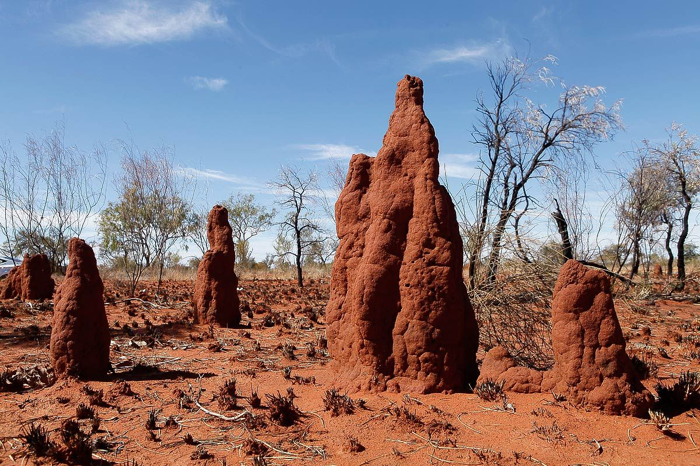
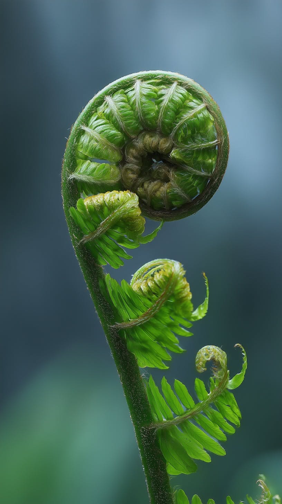
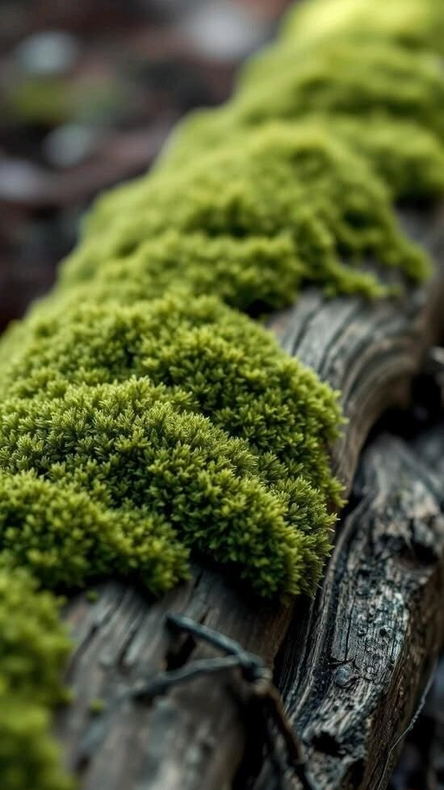
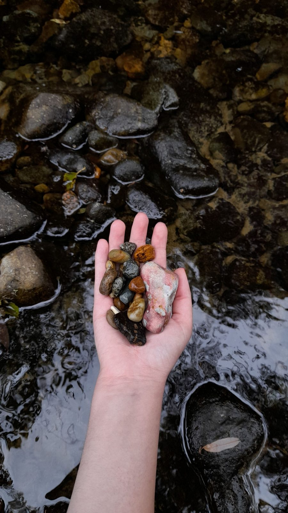
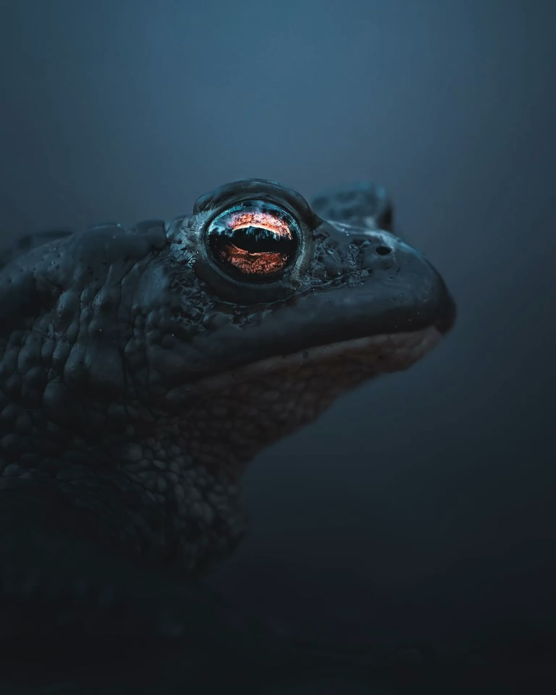

Design Ideas
Found in Nature
Form, structure and function
of 2.13 million species
Termite mounds —
have you looked inside?
Three ways to start
biomimetic design
Biomimicry education
Learn four steps: observation, extraction, transition and creation, with at least 30 real organism records per course. Three courses run from 12 to 80 hours.
Biomimicry consulting
Send us a problem and a biologist and an engineer review it together. We mostly handle noise, heat, drag and adhesion; the first report arrives within four weeks.
Biomimicry knowledge service
Search 2.13 million species records with papers and patents in one place, by scientific name, common name or function, and collect results on a canvas.

Did you know a termite mound’s ventilation
is used to cool buildings?
How did a termite mound lead to building ventilation?
Small pores and chimneys in the mound let warm air out by day and cool air in at night. Architect Mick Pearce moved this flow into a concrete building. Turning an observed structure into design requirements is taught in our courses.
See education programmesWant to solve another cooling problem?
We work on functional and formal limits such as noise, vibration and heat. We review past papers and patents first to find untested combinations, and a researcher turns principles into requirements.
See consulting programmesIt is not only termites
Materials, functions and physical and chemical mechanisms of 2.13 million described species are organised for search. Find the organism you need.
See the knowledge serviceMore biomimicry cases
Follow us on Instagram @phyllo_lab
Biomimicry Education
Learn four steps — observation, extraction, transition and creation —
and practise moving principles into product design.
Choose the course that fits your level.
Every course uses real organism records and papers.
Each team finishes with at least one prototype.
Course record
- Junior Program (2021–2026) — schools and public, 42 courses
- Beginner Program (2019–2026) — universities, 27 courses (1,080 hours)
- Practitioner Program (2019–2026) — companies and labs, 15 courses (1,200 hours)
Science, technology, engineering,
arts and maths in one course
- Biological function
- Ecosystem
- Material properties
- Physics & chemistry
- Data analysis
- Sensors
- 3D scanning
- Simulation
- Invention
- Structural design
- Prototyping
- Requirements
- Form & colour
- Business model
- Product story
- Survival strategy
- Principles
- Problem framing
- Ratio & pattern
- Measurement
Levels differ, the goal is the same:
finish with at least one idea or prototype.
Curriculum of biomimicry education



Junior Program
Biomimetic invention for middle and high school students
Students observe local organisms and build a prototype that solves an everyday problem. 12 hours, with the most time on observation.
Beginner Program
Biomimetic engineering design for undergraduates
Students learn design methods and 20 case studies, then build a team prototype. 40 hours, with the most time on creation.
Practitioner Program
Design course for company designers and researchers
Participants bring a real project, define functions, search organisms and draft a business model. 80 hours, with the most time on extraction and transition.
Biomimicry Consulting
Hand a problem to our researchers and receive leads or design proposals. A biologist and an engineer work as one team. Moving a natural principle into a product needs wide research; consulting shortens that time.
Consulting record
- Quieter cooling fans for home appliances (2025–2026)
- Low-drag hull surface for small ferries (2025)
- Fog-collecting façade panel feasibility study (2024)
- Impact liner redesign for cycling helmets (2024)
- Anti-glare cover film for outdoor displays (2023)
- Heat spreader channel layout for battery packs (2023)
- Wet-surface adhesive patch concept for wound care (2022)
- Passive ventilation plan for a logistics warehouse (2021)
From natural principles
to product and service design
We use PHYLLO’s computational biomimetic design process,
run by researchers in problem solving, biology and mechanical engineering.
Computational Biomimetic Design
issues
analysis
story
tech
tech
cause
analysis
analysis
straints
search
matrix
map
prototype
test
prototype
servicepro.phyllo-lab.kr
Looking for a research topic?
By PHYLLO’s patent index, biomimetic filings in 2024 were about eleven times those in 2004. We use 2.13 million species records with papers and patents to find untested combinations, and connect you with biologists where needed.
🔬 Apply for research consulting >>Need a product idea?
Four steps: define functions, search organisms, extract principles and review prototype conditions. We have worked in chemicals, materials, machinery, aerospace and construction; the first report arrives within four weeks.
💡 Apply for corporate consulting >>Need design references?
We collect forms, colours, structures and textures of organisms by theme into a report, with photo sources, scientific names and dimensions.
🎨 Apply for design references >>Biomimicry Knowledge Service
Solve problems yourself with the search tool.
Find and organise records of 2.13 million species,
papers and patents on one screen.
Materials (organic compounds), forms, functions
and industrial uses are provided together.
It offers search, shared workspaces and research logs,
and translates between biology and engineering terms.
Species records organised by scientific name.
Synonyms of the same organism are searched together.
If a record is missing,
the topic may not have been studied yet.
Biological records scattered across databases
are gathered in one tool.
1,284 search results


Species search,
natural principles and manufacturing methods, product functions
side by side,
to start product and service design.
Why imitate nature?
Described species are only a part
About 2.13 million species have been named so far.
An estimated 86% of land species have not yet been described.
PHYLLO links the form, structure and material data of described species
to papers and patents so designers can use them.
SpeciesFrom PHYLLO species index
Land SpeciesEstimate, Mora et al. 2011
Market size
By the PHYLLO market note, biomimetic materials
are estimated at USD 41.7 billion in 2030.
Medical biomimetic products are estimated at USD 28.4 billion in 2027.
Both figures are medians of 12 public reports compiled by PHYLLO.
2027 Market EstimateFrom PHYLLO market note
2030 Market EstimateFrom PHYLLO market note

Patent filings
By PHYLLO’s patent index, biomimetic filings
grew about elevenfold from 2004 to 2024.
Papers grew about sixfold over the same period.
Materials, medicine, architecture and robotics lead the filings.
patent records
2004 → 2024From PHYLLO patent index
Making biomimicry part of design
Only a small share of biological knowledge has reached industrial design,
because finding and reading biology takes designers a long time.
PHYLLO runs a search tool that translates between biology and engineering terms,
together with courses and researcher consulting.
Solve the problem yourself, take a course or commission a researcher.
PHYLLO family sites
phyllo_lab